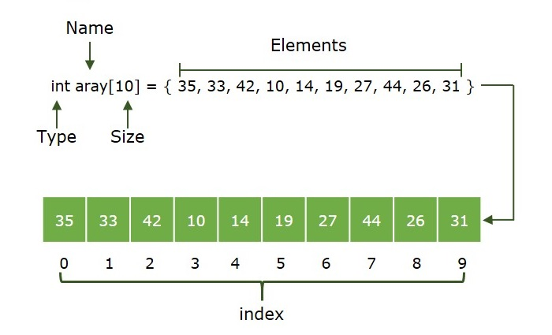

Array
Array — bu bir xil o'zgaruvchi turidagi elementlar to'plami bo'lib, ular ketma-ket xotira joylashuvlarida saqlanadi. Bu dasturlashda eng mashhur va oddiy ma'lumot tuzilmalaridan biridir.
Illustration
Massivning asosiy tushunchalari
- Massiv indeksi: Massivda elementlar indekslar orqali aniqlanadi. Massiv indeksi 0 dan boshlanadi.
- Massiv elementi:Elementlar massivda saqlanadigan narsalar bo‘lib, ularni indeks orqali olish mumkin.
- Massiv uzunligi: Massivning uzunligi uning ichida nechta element saqlanishi mumkinligiga bog‘liq.
Massivning xotirada tasviri
Massivda barcha elementlar ketma-ket xotira joylashuvlarida saqlanadi. Shuning uchun, agar biz massivni tashkillashtirsak, elementlar xotirada ketma-ket ajratiladi. Bu elementlarga samarali kirish va ularni boshqarishni ta'minlaydi.
.webp)
Massivni e'lon qilish
Turli tillarda massivlar har xil usullar bilan e'lon qilinishi mumkin. Quyida turli dasturlash tillari uchun massivni e'lon qilish misollari keltirilgan:
// JS kodi
let arr = []Massivni boshlang'ich qiymat bilan to'ldirish
Turli tillarda massivlar turli usullar bilan boshlang'ich qiymat bilan to'ldirilishi mumkin. Quyida ayrim dasturlash tillari uchun massivni boshlang'ich qiymat bilan to'ldirish misollari keltirilgan:
let arr = [ 1, 2, 3, 4, 5 ];
let arr = [ 'a', 'b', 'c', 'd', 'e' ];
let arr = [ 1.4, 2.0, 24, 5.0, 0.0 ];Massivning ahamiyati
Faraz qiling, besh nafar talabadan iborat sinf bor va ularning imtihondagi baholarini yozib olishimiz kerak. Buni beshta alohida o‘zgaruvchini e’lon qilib va ma’lumotlarni kuzatib borsak bo‘ladi. Ammo agar talabalar soni juda ko‘payib ketsa, ma’lumotlarni boshqarish va saqlash qiyinlashadi.
Bu shuni anglatadiki, biz kichik obyektlar soni uchun oddiy o‘zgaruvchilar (v1, v2, v3, ...) dan foydalanishimiz mumkin. Ammo katta hajmdagi ma’lumotlarni saqlashimiz kerak bo‘lsa, ularni oddiy o‘zgaruvchilar bilan boshqarish qiyin bo‘ladi. Massivning g‘oyasi shundan iboratki, ko‘p obyektlarni bitta o‘zgaruvchi orqali ifodalash mumkin.

Massiv ma'lumot tuzilmalari zarurati yoki qo'llanilishi
- Massiv asosiy ma'lumot tuzilmasi hisoblanadi va ko'plab boshqa ma'lumot tuzilmalari, masalan, stack va queue, massiv yordamida amalga oshiriladi.
- Ma'lumotlarni jadval va matritsa shaklida ifodalash
- Hash jadvallari va graflar kabi dinamik ma'lumot tuzilmalarini yaratish.
- Boshqa ma'lumot tuzilmalari bilan solishtirganda, massivlarning quyidagi afzalliklari bor: tasodifiy kirish (biz tezda i-chi elementga kira olamiz) va keshga do'stlik (barcha elementlar ketma-ket joylashgan).
Massiv turlari
Massivlar ikki usulda tasniflanadi:
- Hajm asosida
- O‘lchamlar asosida

Hajmga ko'ra massiv turlari:
1. O'zgarmas hajmli massivlar:
Ushbu massivning hajmini o'zgartirish yoki yangilash mumkin emas. Bu yerda faqat belgilangan hajm (ya'ni, to'rtburchak qavslar ichida ko'rsatilgan hajm) uchun xotira ajratiladi. Agar massivning hajmini oldindan bilmasak, katta hajmni e'lon qilib, kam sonli elementlarni saqlasak, xotira sarflanishi bo'ladi yoki elementlar sonidan kamroq hajm belgilasak, barcha elementlarni saqlash uchun yetarli xotira olmaymiz. Bunday holatlarda statik xotira ajratish tavsiya etilmaydi.
// O'zgarmas hajmli massiv misollari
int[] arr1 = new int [5];
// Boshqa usul (Massiv yaratish va
// boshlang'ich qiymat bilan to'ldirish)
int[] arr2 = {1, 2, 3, 4, 5};2. Dinamik hajmli massivlar:
Massivning hajmi kod bajarilishi davomida foydalanuvchi talablariga qarab o'zgaradi, shuning uchun dasturchilar hajm haqida tashvishlanishlari shart emas. Ular kerak bo'lganda elementlarni qo'shish va o'chirishlari mumkin. Bu massivlarda xotira asosan dinamik tarzda ajratilib va ozod qilinadi.
// Dinamik hajmli massiv
let arr = new Array();O'lchamlar bo'yicha massiv turlari:
1. Bir o'lchamli massiv (1-D massiv): 1D massivni satr sifatida tasavvur qilish mumkin, bu erda elementlar ketma-ket joylashgan.
.webp)
2. Ko'p o'lchamli massiv: Ko'p o'lchamli massivlar - bu 1 dan ko'p o'lchamli massivlar. Biz ko'p o'lchamli massivlardan jadval shaklida murakkab ma'lumotlarni saqlash uchun foydalanishimiz mumkin. Biz 2D massivlar, 3D massivlar, 4D massivlar va shunga o'xshashlarni yarata olamiz.
- Ikki o'lchamli massiv (2-D massiv yoki matritsa): 2D ko'p o'lchamli massivlarni massivlar qatorlari va ustunlaridan iborat matritsa sifatida tasavvur qilish mumkin.
.webp)
- Uch o'lchamli massiv (3-D massiv): 3-D ko'p o'lchamli massiv uchta o'lchamdan iborat bo'lib, uni ikki o'lchamli massivlar massivi sifatida tasavvur qilish mumkin.
.webp)
Massivdagi operatsiyalar
1. Massivni o'rganish:
Massivni o'rganish - bu massivning barcha elementlarini bir marta tashrif buyurishni o'z ichiga oladi. Quyida turli tillarda massivni o'rganishning amalga oshirilishi keltirilgan:
let arr = [1, 2, 3, 4, 5]
// arr[] ustida o'rganish
for (let x of arr)
console.log(x)2. Massivga qo'shish:
Biz massivda istalgan joyga bitta yoki bir nechta elementlarni qo'shishimiz mumkin. Quyida massivga qo'shishning turli tillardagi amalga oshirilishi keltirilgan:
// javascript dasturi - Elementni
// ma'lum bir pozitsiyada massivga qo'shish
function insertElement(arr, n, x, pos)
{
// o'ngdagi elementlarni o'ngga siljitish
// pozitsiyadan o'ngda joylashgan
var i = n - 1;
for (i; i >= pos; i--)
{
arr[i + 1] = arr[i];
}
arr[pos] = x;
}3. Massivdan o'chirish:
Biz massivda istalgan indeksdagi elementni o'chirishimiz mumkin. Quyida massivdagi elementni o'chirishning amalga oshirilishi keltirilgan:
// o'chirilishi kerak bo'lgan elementni qidirish funksiyasi
function findElement(arr,n,key)
{
let i;
for (i = 0; i < n; i++)
if (arr[i] == key)
return i;
return -1;
}
// Elementni o'chirish funksiyasi
function deleteElement(arr,n,key)
{
// O'chirilishi kerak bo'lgan elementning pozitsiyasini topish
let pos = findElement(arr, n, key);
if (pos == -1)
{
document.write("Element topilmadi");
return n;
}
// Elementni o'chirish
let i;
for (i = pos; i< n - 1; i++)
arr[i] = arr[i + 1];
return n - 1;
}4. Massivda qidirish:
Biz massivni o'rganib chiqib, elementni qidirishimiz mumkin. Quyida massivda elementni qidirishning amalga oshirilishi keltirilgan:
// Qidirish operatsiyasini amalga oshirish funksiyasi
function findElement( arr, n, key)
{
let i;
for (i = 0; i < n; i++)
if (arr[i] == key)
return i;
return -1;
}Massivda operatsiyalar uchun murakkablik tahlili
Vaqt murakkabligi:
| Operation | Best Case |
Average Case |
Worst Case |
|---|---|---|---|
Traversal |
Ω(N) |
θ(N) |
O(N) |
Insertion |
>Ω(1) | θ(N) |
O(N) |
Deletion |
Ω(1) |
θ(N) |
O(N) |
Searching |
Ω(1) |
θ(N) |
O(N) |
Xotira murakkabligi:
Operation |
Best Case |
Average Case |
Worst Case |
|---|---|---|---|
Traversal |
Ω(1) |
θ(1) |
O(1) |
Insertion |
Ω(1) |
θ(N) |
O(N) |
Deletion |
Ω(1) |
θ(N) |
O(N) |
Searching |
Ω(1) |
θ(1) |
O(1) |
Massivning afzalliklari
- Massivlar tasodifiy kirish orqali elementlarga murojaat qilish imkonini beradi. Bu elementlarga pozitsiya bo'yicha murojaat qilishni tezlashtiradi.
- Massivlar yaxshi kesh lokalitetiga ega bo'lib, bu samaradorlikda katta farqni keltirib chiqaradi.
- Massivlar bir xil turdagi ko'plab ma'lumotlarni bitta nom bilan ifodalaydi.
- Massivlar boshqa ma'lumotlar tuzilmalarini amalga oshirishda ishlatiladi, masalan, bog'lanmagan ro'yxatlar, steklar, navbatlar, daraxtlar, grafalar va boshqalar.
Massivning kamchiliklari
- Massivlar o'zgaruvchan o'lchamga ega bo'lgani uchun, bir marta xotira ajratilgandan so'ng, uning o'lchamini oshirib yoki kamaytirib bo'lmaydi, bu esa zarur bo'lsa, qo'shimcha ma'lumotlarni saqlashni imkonsiz qiladi. O'lchami belgilangan massivlar statik massivlar deb ataladi.
- Massivga kerakli miqdordan kam xotira ajratish ma'lumotlarning yo'qolishiga olib keladi.
- Massivlar tabiatan gomonikdir, shuning uchun bitta massiv turli ma'lumot turlaridagi qiymatlarni saqlay olmaydi.
- Massivlar ma'lumotlarni ketma-ket joylashgan xotira manzillarida saqlaydi, bu esa o'chirish va kiritishni amalga oshirishni juda qiyinlashtiradi. Ushbu muammo bog'lanmagan ro'yxatlar yordamida hal qilinadi, chunki ular elementlarga ketma-ket kirish imkonini beradi.
Massivlarning qo'llanilishi
- Ular boshqa ma'lumot tuzilmalarini amalga oshirishda, masalan, massiv ro'yxatlari, yiriklar, xesh jadvallar, vektorlar va matritsalar kabi tuzilmalar bilan ishlatiladi.
- Ma'lumotlar bazasining yozuvlari odatda massivlar shaklida amalga oshiriladi.
- Kompyuter tomonidan qidiruv jadvallari uchun ishlatiladi.
Natija
Mu discusseddan so'ng, biz massivlarning bir xil turdagi elementlarga kirishni oddiy usul ekanligini va biz indekslari orqali elementlarni samarali topa olishimizni va ulardan turli operatsiyalarni bajarishimiz mumkinligini xulosa qildik. Shunday qilib, ular xotira ajratish jihatidan samaraliroq bo'lib, barcha zamonaviy dasturlash tillarida ishlatilishi kerak. Shuning uchun bu mavzu intervyu nuqtai nazaridan juda muhimdir va ko'pgina kompaniyalar odatda massivlarga oid muammolarni so'raydi. Shu sababli, biz uni yaxshi bilishimiz kerak.
Video Explanation
Code Example
// Array yaratish
let fruits = ["apple", "banana", "mango"];
console.log()
// Element qo'shish
fruits.push("orange"); // ["apple", "banana", "mango", "orange"]
// Element o'chirish
fruits.pop(); // ["apple", "banana", "mango"]
// Element qidirish
let index = fruits.indexOf("banana"); // index = 1
// Elementni o'zgartirish
fruits[1] = "kiwi"; // ["apple", "kiwi", "mango"]